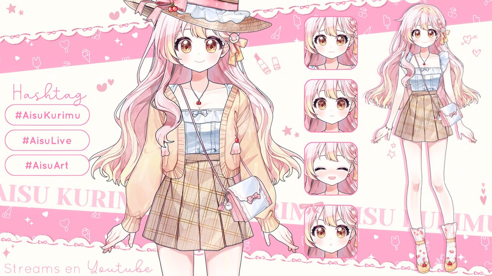

Aisu Kurimu
Aisu Kurimu es una linda heladera que se ganará tu corazón con
su tierna
voz. Le encantan los helados de fresa y vainilla. ¡Son sus favoritos! Aunque no sea la
mejor jugadora de videojuegos, le gusta explorar todo tipo de géneros... menos el
terror.
"¿Quieres un helado? ¡Tengo tu favorito!"